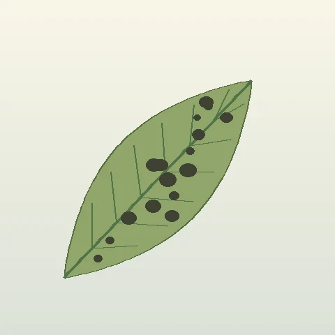

Sooty mold
A removable sooty coating
This is one possible explanation. Compare the signs below with those on your plant.

What to look for
Wipe a small area and inspect the foliage above for sticky honeydew or scale insects.
Possible causes and next steps
Sooty mold often grows on honeydew. Identify the sap-feeding insect and gently wipe washable foliage.